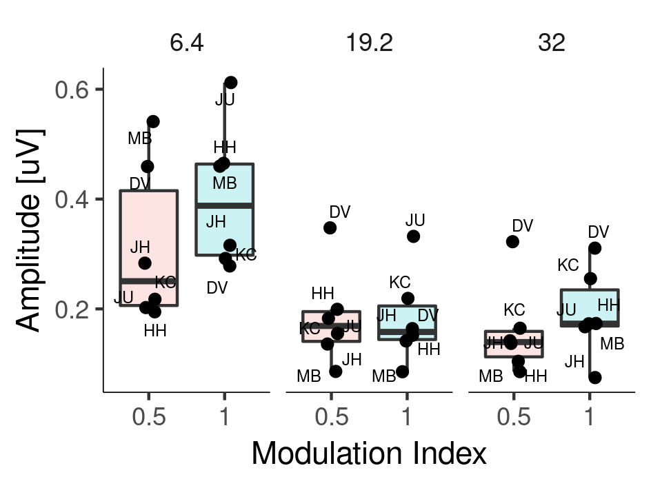

Neurophisiological measures of Electrode and Modulation Rate Discrimination in Cochlear Implants
Jaime A. Undurraga, Lindsey Van Yper, David McAlpine, and Deborah Vickers
2019-07-18
Spread of excitation

Spread of excitation

Spread of excitation

Dead regions

Objective measures of spectral processing
- Recently our group has been using the electrically-evoked acoustic change complex (eACC) (e.g. Mathew et al. 2017, 2018) to assess independency of electrode pairs in CI listeners.
- This is carried out by loudness balancing stimulating electrodes and measuring the eACC to a change of electrode.

- Strong relationship between the ACC and behavioural measures of electrode discrimination. (Mathew et al. 2017, 2018)
Methods
EEG
- Continuous stimulation at a rate of 1 Hz.
- 5 CI users (Cochlear device).
- Stimuli: 826 pps; pulse width: 43 us (7us IPG); monopolar mode.
- 3 apical electrode pairs (14-15; 15-16; 16;17)
- EEG: 64 channels Biosemi system, fs: 16384 Hz
- Artifact removal: denoising source separation (DSS) (de Cheveigne and Simon, 2008)
Behavioural
- 3I-2AFC discrimination task (400 ms; ISI 500 ms)

Methods
- 6 NH
- Stimuli: 500 Hz tone presented on the right ear (65 dB SPL).
- The envelope was partially or fully amplitude modulated.
- The modulation frequency was alternated between 20 and 32 Hz. The switching rate of the envelope frequency was either 1 Hz or 7 Hz.
- Denoising source separation (DSS)

Ludness across AM rates is stable


Results - NH - ACC (1 Hz)

Results - NH
| NH - ACC (1 Hz) | NH - steady-state (6.4Hz) |
|---|---|
 |
 |
| modulation index effect:- t(5) = -4.3498, p-value = 0.007 | modulation index effect: F(1,28.9) = 16.513, p-value < 0.001 |
- Transient (ACC) and stady-state responses were reliably obtained.
Methods
- 5 CI participants
- CI users were simulated at 128 pps on electrode 16.
- The envelope was amplitude modulated between threshold and comfortable level or 50% of the dynamic range.
- The modulation frequency was alternated between 20 and 35 Hz. The rate of the modulation was either 1 Hz or 6.9 Hz.
Artifact rejection

Artifact rejection

Artifact rejection

Artifact rejection

Artifact rejection

ACKNOWLEDGEMENTS
- Thank you and all participants.


| MRC Senior Fellowship in Hearing Research (MR/S002537/1) | Australian Research Council (FL160100108) |
|---|---|